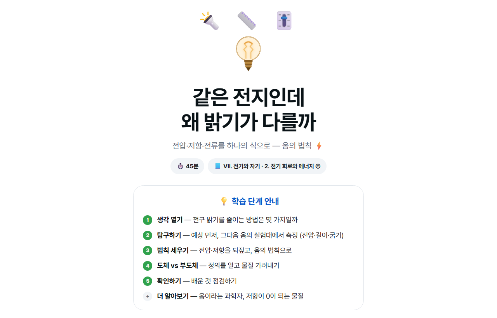
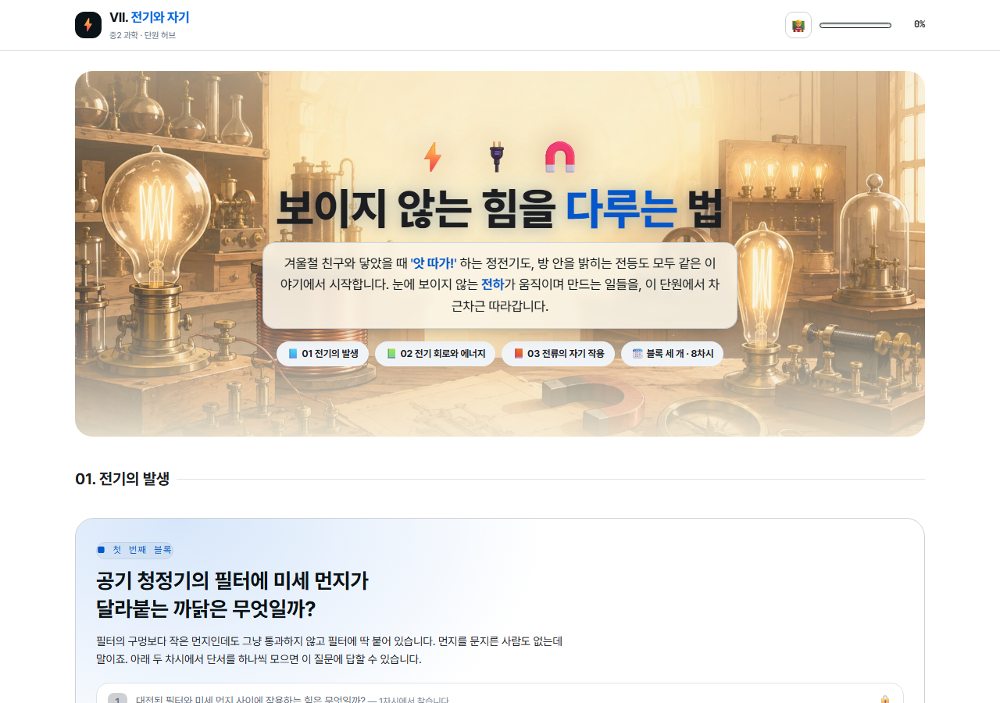
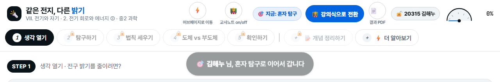
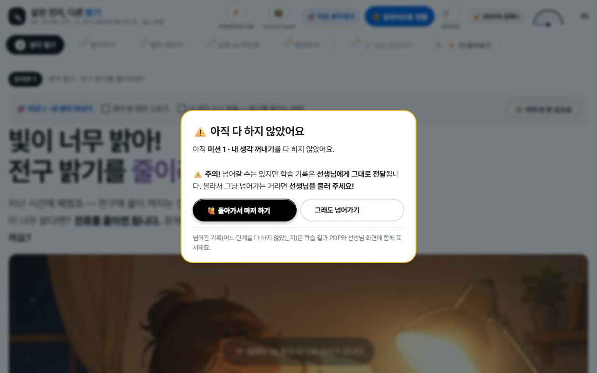
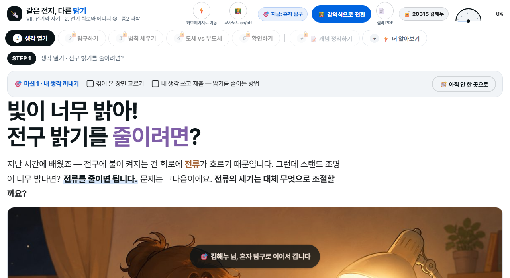
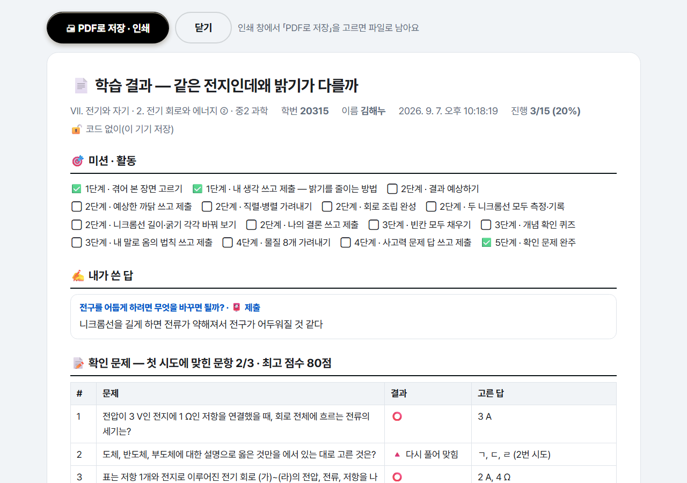

1. 어떤 자료인가요
한 차시가 웹페이지 한 장입니다. 설치도 로그인도 없고, 링크만 열면 됩니다. 전자칠판에 띄워 함께 진행해도 되고, 학생 기기(디벗·크롬북)로 각자 하게 해도 됩니다.

수업은 다섯 걸음으로 짜여 있습니다. 생각 열기 → 탐구하기 → 개념 세우기 → 적용하기 → 확인하기. 여기에 📝 개념 정리하기(선생님과 함께 채우는 빈칸 정리)와 ⚡ 더 알아보기(교과서 밖 이야기)가 덧붙습니다.

2. 두 가지 방식 — 강의식과 혼자 탐구
오른쪽 위 버튼 하나로 바뀝니다. 지금 어느 방식인지 옆에 늘 표시됩니다.

🧑🏫 강의식
모든 단계가 열려 있습니다. 선생님이 화면을 넘기며 함께 진행할 때 씁니다.
전자칠판 수업의 기본값입니다.
🎯 혼자 탐구
앞 단계를 마쳐야 다음 방이 열립니다. 학생이 자기 기기로 스스로 나아갈 때 씁니다.
쓴 글과 문제 결과가 기록으로 남습니다.
🧑🏫 교사노트 버튼은 무엇인가요
수업 중 짚어 줄 지도 포인트, 학생들이 자주 하는 오개념, 발문 예시가 화면에 함께 뜹니다. 수업 준비할 때 켜 두고 읽어 보시면 흐름을 잡기 좋습니다. 학생에게 보일 화면에서는 꺼 두세요.
3. 수업에서 이렇게 씁니다
가. 전자칠판으로 함께 (강의식)
나. 학생 기기로 각자 (혼자 탐구)
학생에게 링크를 주고 오른쪽 위 🎯 혼자 탐구로 전환을 누르게 합니다. 학번과 이름을 넣으면 시작되고, 참여 코드 없이도 끝까지 할 수 있습니다.

다. 남는 시간·보충·결석생
혼자 탐구로 열어 두면 학생이 자기 속도로 진행합니다. 결석한 학생에게 링크를 보내 스스로 따라오게 할 수도 있습니다.
4. 혼자 탐구 자세히
미션으로 한 걸음씩


쓰고 제출하기

확인 문제

학습 결과 PDF

5. 학생 기록을 걷고 싶다면
참여 코드를 쓰면 학생이 쓴 글과 문제 결과가 선생님 화면으로 모입니다. 이 기능은 준비가 필요합니다 — 무료 데이터베이스(Supabase) 계정을 만들고 안내된 SQL을 한 번 실행하면 됩니다.

준비 없이 그냥 쓰시려면
참여 코드를 나눠 주지 않으면 됩니다. 학생은 🔓 코드 없이 혼자 탐구로 진행하고, 결과는 📄 PDF로 제출합니다. 서버 준비 없이 바로 수업에 쓸 수 있는 방법입니다.
6. 자주 묻는 것
| 이런 때 | 이렇게 하세요 |
|---|---|
| 그래프가 한눈에 안 들어와요 | 브라우저 화면 비율을 100%로 맞추세요. Ctrl+0을 누르면 한 번에 됩니다. 학생 기기에서 확대해 둔 경우가 가장 흔합니다. |
| 학생이 진행한 게 사라졌어요 | 진행 상황은 그 기기의 브라우저에 저장됩니다. 다른 기기로 옮기거나 사용 기록을 지우면 사라집니다. 참여 코드를 쓰면 서버에 남아 다른 기기에서도 이어집니다. |
| 모든 단계를 한 번에 보고 싶어요 | 🧑🏫 강의식으로 전환을 누르면 잠금이 풀립니다. 쓴 글은 그대로 남습니다. |
| 수업 시간이 부족해요 | 1·2단계(예상과 탐구)만 하고 3단계 개념은 다음 시간에 이어도 됩니다. 진행 상황이 저장되어 이어서 열립니다. |
| 인터넷이 느려요 | 시뮬레이션은 모두 페이지 안에서 돌아갑니다. 처음 한 번만 열리면 그 뒤로는 끊겨도 진행됩니다. |
| 학습지로도 쓰고 싶어요 | 차시마다 📝 개념 정리하기 탭이 종이 학습지와 같은 구성입니다. 인쇄해서 함께 쓰시면 됩니다. |
수업 전에 딱 3분만
- 차시 링크를 열어 교사노트를 켜고 지도 포인트를 훑어봅니다.
- 2단계 시뮬레이션을 한 번 조작해 봅니다. 어디서 학생을 부를지 정합니다.
- 학생 기기로 할 거면 화면 비율 100%를 먼저 안내합니다.